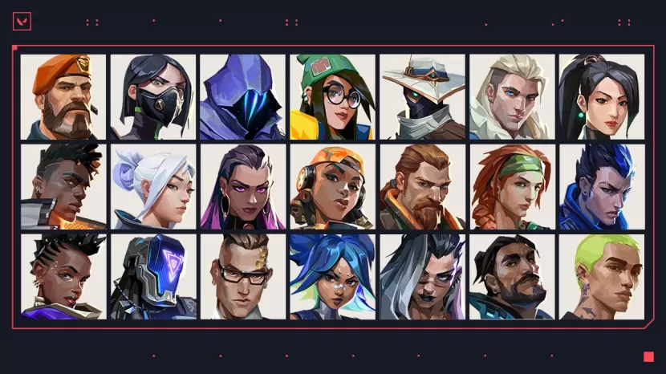
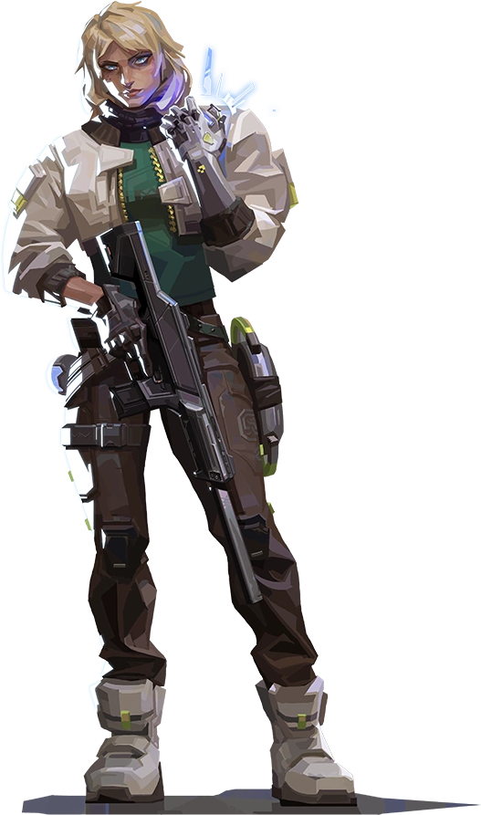
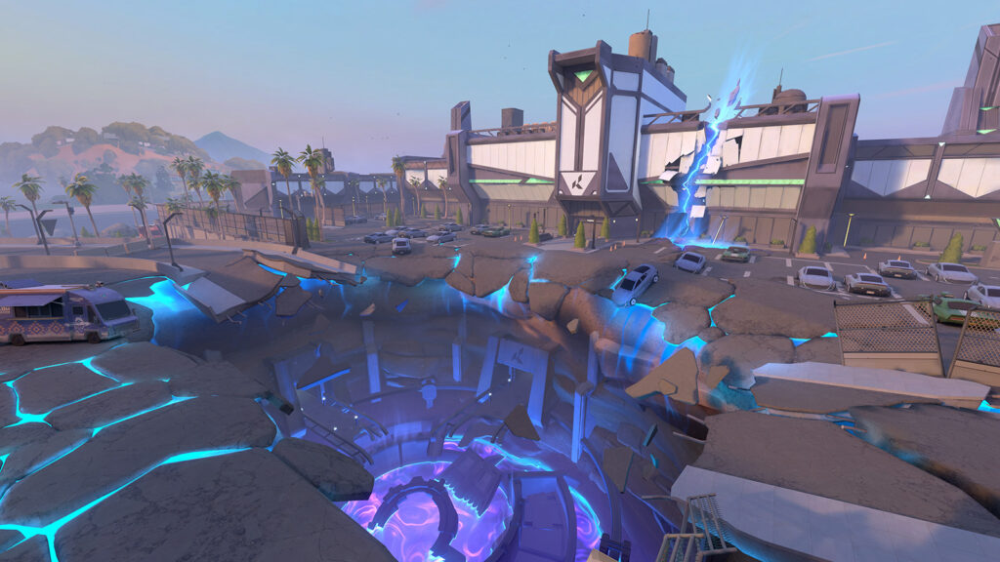
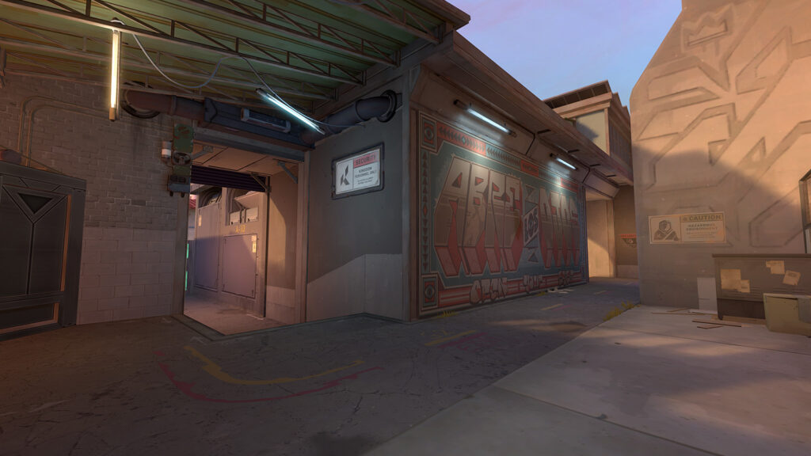
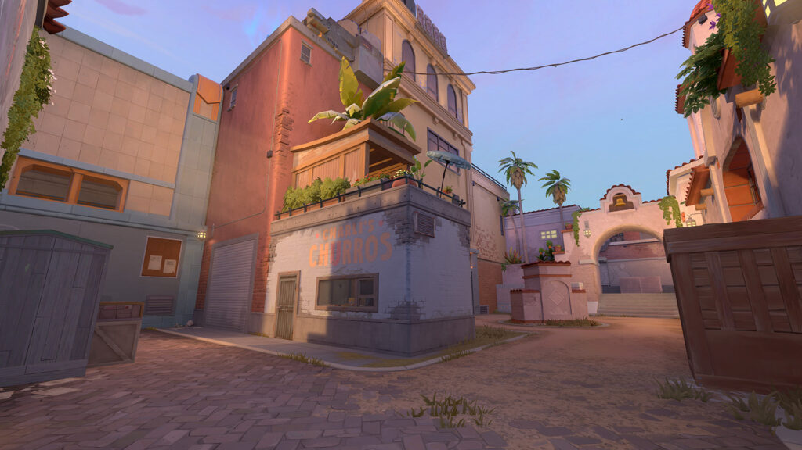
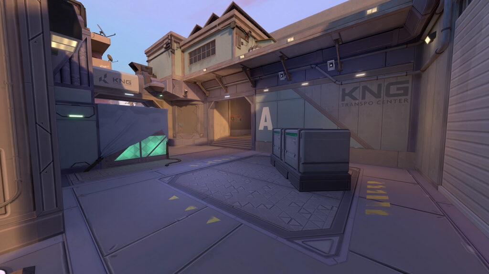

| Home | Article | Info | VCT | Gallery | Contact Us |
|---|
INFO |
|  |
|
Tidak lama lagi, Valorant bakal menghadirkan update terbarunya di akhir bulan Juni 2023 ini. Update yang dihadirkan oleh game garapan Riot Games tersebut adalah, Episode 7 yang akan dimuat pada patch 7.0. Hadirnya update besar dari Valorant itu sudah dipastikan hadir pada tanggal 27 Juni nanti. Tentunya Valorant juga sudah membeberkan satu update, yang dipastikan hadir melalui patch 7.0. Update yang sudah dipastikan hadir adalah mode permainan terbarunya, Team Deathmatch. Ini merupakan mode permainan yang akan dihadirkan Valorant pada patch terbaru. Jelas komunitas sangat menanti kehadiran dari update yang satu ini. Selain itu, patch 7.0 menghadirkan sejumlah update-update lain, yaitu sistem progres. Ada banya fitur yang diubah oleh Riot Games dalam update tersebut. Melansir dari Dot Esports, perubahan yang diberikan adalah misi harian bagi pemain, dimana fitur tersebut bakal dikerjakan ulang. Selain itu, agent contract bakal digantikan dengan fitur terbaru, agent dan peralatan. Kemudian, Valorant juga menambahkan mata uang in game terbaru, yang diperoleh secara gratis. Lalu, Valorant turut menghadirkan fitur Kingdom Credits, yang merupakan tiket untuk mendapatkan aksesoris battlepass yang lama, serta membuka kunci agent lebih cepat. Sistem Progres juga mengatur ulang dari sisi rank. Valorant mengatur ulang rank pemain pada awal episode 7. Syaratnya, pemain musti memainkan lima permainan untuk membuka posisi kompetitif. Selain dua update yang dipastikan hadir dalam patch 7.0 nanti, ada satu update yang akan kemungkinan hadir di dalam patch baru tersebut. Update yang dimaksud adalah bakal menghadirkan agent yang ke 23. Sebelumnya, komunitas dikejutkan dengan pernyataan dari Executive Producer Valorant, Anna Donlon, yang membeberkan bocoran mengenai dua agent baru dengan peran yang berbeda. Anna menyebutkan, Valorant akan kedatangan agent dengan peran Sentinel serta Duelist. Namun, ia belum buka suara mengenai kapan hadirnya agent baru tersebut. Dibalik itu, mulai berhembus kabar burung dari komunitas, kalau agent dengan role Sentinel tersebut bakal hadir pada akhir Juni ini. Dengan kata lain, agent Sentinel tersebut kemungkinan bakal dihadirkan pada episode 7, atau melalui patch 7.0 yang hadir pada 27 Juni mendatang. Apakah Valorant bakal menghadirkan agent baru melalui episode 7? |
| New Agent Valorant |
| Deadlock |
|

Deadlock merupakan Agent yang memiliki role atau peran sebagai Sentinel. Dia merupakan detektif asal Norwegia yang dapat mengerahkan serangkaian nanowire mutakhir untuk mengamankan medan perang dari serangan yang paling mematikan. Tak ada yang bisa lolos dari pengawasan ketatnya, ataupun bertahan dari kebengisannya. Skill Deadlock Valorant :
|
|
|
| Detail Valorant Sunset: Map baru bernuansa Los Angeles, USA |
| Sunset |
|  |
| Seiring dengan Episode 7 Act 2 segera hadir, para pemain dapat merasakan pengalaman bermain di map baru, Valorant Sunset. Map baru dari Riot Games ini mengusung tema daerah perkotaan Los Angeles, California, USA.
Berbagai unsur ikonik dari LA dimasukkan ke dalam Valorant Sunset. Seperti Neon Sunset, aneka Food Truck, jalan raya hingga ragam karya Grafiti.
Map Valorant Sunset memiliki 3 jalur, rancangan yang cukup familiar bagi para pemain yang menyukai mode Team Deathmatch. Berikut penjelasan selengkapnya tentang Valorant Sunset. |

|
| Berbagai map yang dirancang untuk Team Deathmatch punya bentuk yang kompleks. Ada 3 jalur utama di mana para tim sering beradu. Berbeda dengan Sunset, ukurannya lebih besar dan memiliki dua Spikes site berfokus ke area mid. “Valorant Sunset menghadirkan area mid yang sulit dikuasai dan tidak memihak tim mana pun. Area yang cukup bagus untuk para pemain rifle dan membuka kesempatan untuk tim manapun merebutnya,” ucap Valorant Lead Map Designer, Joe Lansford. |
|  |
| “Kami berharap dapat melihat kedua tim menguasai area mid sebagai strategi mereka saat bermain di Sunset,” tambah dia. “Sunset memiliki beberapa fitur umum pada map lainnya, seperti pintu Ascent hingga pintu airlock di Lotus. Map ini memiliki banyak jalur untuk digunakan para pemain. Yang membuat Sunset unik adalah sebuah ‘parit beracun'” papar Lansford. Riot Games memperkenalkan Sunset dalam sebuah sesi tertutup saat Valorant Champions 2023 Media Day tanggal 23 Agustus di Los Angeles, California. Lansford menambahkan di dalam map tersebut, ada area khusus di mana para pemain yang terjatuh ke dalam parit beracun akan mendapatkan damage. Seperti map Valorant lainnya, Sunset memiliki jalur pendek dan panjang untuk menuju ke Spike site. Tapi, untuk tim yang mampu merebut area mid akan sangat beruntung. Memberi pengaruh besar ketika masuk dalam spike sites. |
|  |
| Area Mid menambahkan bentuk baru dalam Valorant dengan bentuk seperti sepatu Tapal Kuda. Area A site akan menguji para pemain dengan pertempuran jarak dekat, jalur-jalur yang sempit dengan ragam koridor. |
|  |
| Area B site memiliki salah satu pintu seperti di Ascent. Pecahkan dan kalian akan membuka jalur panjang dari B site ke Mid. |
|
|